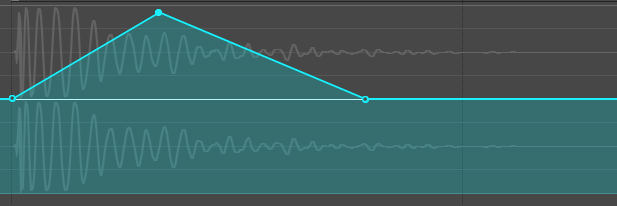
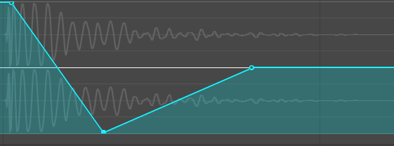
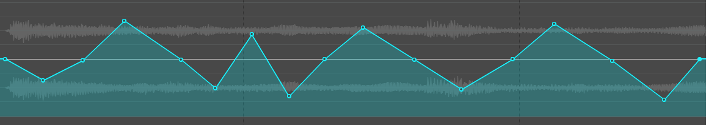
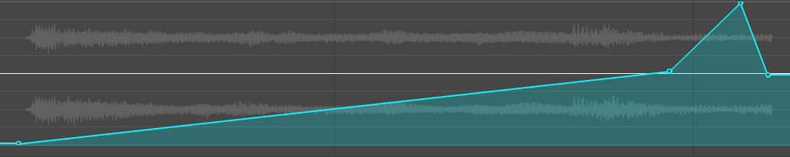
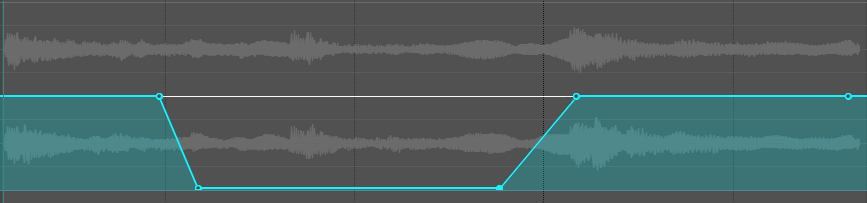

MOTIF DE FLEXION¶
Introduction¶
Le motif de flexion est une technique de design sonore qui consiste à modifier temporairement la hauteur (pitch) d’un son à l’aide d’un effet de type Pitch Shifter.
Cette modification est contrôlée par une automatisation (enveloppe) afin de créer des mouvements progressifs ou rapides dans le temps.
👉 On “plie” littéralement la hauteur du son : - vers le haut → son plus aigu - vers le bas → son plus grave
Concept de base¶
Le principe repose sur trois éléments :
- Un son source (audio)
- Un effet Pitch Shifter
- Une enveloppe d’automatisation
Schéma simple¶
Son audio → Pitch Shifter → Automatisation → Résultat modifié
Effet 1 – Flexion ascendante (BOING)¶

Objectif¶
Créer un effet de rebond (type cartoon ou interface).
Son recommandé¶
- percussion
- clic
- impact court
Procédure¶
- Importer un son court
- Ajouter un Pitch Shifter
- Créer une enveloppe de pitch
- Départ : valeur normale
- Monter rapidement vers les aigus à l'aide de Shift (Full range)
- Revenir à la valeur normale
Résultat¶
Un son qui “rebondit” vers le haut.
Effet 2 – Flexion descendante (LASER / KICK)¶

Objectif¶
Créer une chute rapide de hauteur sonore.
Son recommandé¶
- kick
- impact
- bruit synthétique
Procédure¶
- Ajouter un son percussif
- Pitch Shifter
- Commencer avec une hauteur élevée
- Descendre rapidement vers les graves
- Revenir à la normale
Résultat¶
Effet de chute ou de tir laser.
Effet 3 – Tape Warble (lecteur brisé)¶

Objectif¶
Simuler un lecteur cassette instable.
Son recommandé¶
- voix
- musique
- ambiance
Procédure¶
- Importer un son
- Ajouter Pitch Shifter
- Créer des variations irrégulières
- Alterner haut / bas de façon aléatoire à l'aide de Shift (Full range)
- Finir à la valeur normale
Résultat¶
Effet instable, analogique, rétro.
Effet 4 – Riser (transition ascendante)¶

Objectif¶
Créer une montée de tension.
Son recommandé¶
- drone
- bruit blanc
- synthé soutenu
Procédure¶
- Ajouter un son long
- Pitch Shifter
- Monter progressivement la hauteur
- Accélérer vers la fin
- Revenir à la normale
Résultat¶
Montée de tension progressive.
Effet 5 – Voix démoniaque¶
Objectif¶
Transformer une voix en version grave et menaçante.
Son recommandé¶
- voix claire et articulée
Procédure¶
- Importer la voix
- Ajouter Pitch Shifter
- Descendre à :
-12 semitons (1 octave)
- Ajuster si nécessaire
Résultat¶
Voix grave, sombre et dramatique.
Effet 6 – Tape Stop¶

Objectif¶
Simuler un arrêt de bande magnétique.
Son recommandé¶
- musique
- boucle audio
Procédure¶
- Ajouter un son musical
- Pitch Shifter
-
Descendre progressivement jusqu’à :
-24 semitons -
Couper le son à la fin
Tape Start¶
Objectif¶
Simuler un démarrage progressif.
Procédure¶
- Commencer à basse hauteur
-
Pitch à :
-24 semitons -
Monter jusqu’à la hauteur normale
Résultat¶
Le son accélère progressivement.